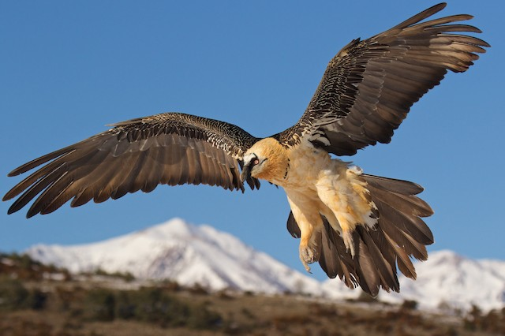

The bearded Vulture is a beautiful yet vicous animal with unusual behavour and a even stranger diet that may suprise you.
the bearded vultur's appearence can be that of white and black feathers however they are often spottet in red too this is because of them bathing in the blood of there prey. This is to brighten there feather to attract potential mates. They have a long sharp beak made for tearing flesh and digging into there prey for there favorite snack.
there habbitat is wide but are most common in large peaks such as the Pyrenees alps or the Arabian peninnsula, There habitat extends to India and west and central china. There rareley ffound anywhere else but large mountens peaks and or steep clifs, they are abble to be spotted in the valets bellow but never make theyre nests there. This is because of there prefered pray and food source that dwel within these lower grounds wich we shal talk about later.
They feed on small animals and also take from bigger pray they has been hunted down or died of natural causes like most vultures. However you think they may feed or the meat of these creatures while yes that is the case they prever to eat the bones and bone marrow of these animals. This is one of the vew creatures that do so without some way of regurtatating the bones bak out the activly digest and use these bones in there diet.
I fell in love with this beautiful bird as soon as i saw it i needed to know hwat it was it looked so cool and intresting. And indeed i found it this dragon like bird was a bearded vulture with a diet consiting of bones now that is metal. Its one of my top 3 animals because of its uniqueness and amezing looks it seems common too if common is being alsmot unreachable form ost humans.